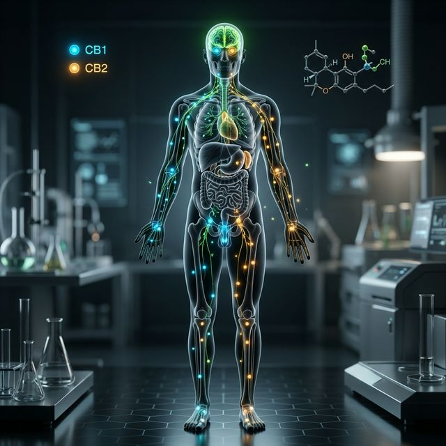

Ciência Botânica e o Sistema Endocanabinoide
A Cannabis não é "mágica", ela é uma ferramenta biológica de precisão. Entenda como ela interage com seu corpo para restaurar o equilíbrio.

A Cannabis não é apenas uma planta; ela é um fitocomplexo biológico que atua em um sistema onipresente no corpo humano: o Sistema Endocanabinoide (SEC). Descoberto na década de 90, o SEC é o principal regulador da nossa homeostase.
Os Receptores: Chaves e Fechaduras
Imagine o seu corpo como uma rede de fechaduras prontas para receber chaves químicas. Essas chaves podem ser produzidas pelo seu próprio corpo (endocanabinoides) ou vir da planta (fitocanabinoides).
- Receptores CB1: Localizados principalmente no cérebro e sistema nervoso central. Eles moderam a dor, o apetite, a memória e a coordenação motora.
- Receptores CB2: Concentrados no sistema imunológico e órgãos periféricos. Eles são fundamentais na modulação da inflamação e na resposta autoimune.
O Efeito Entorno (Entourage Effect):
Diferente de remédios sintéticos que isolam uma única molécula, a Cannabis medicinal é mais eficaz quando o CBD e o THC trabalham juntos com os terpenos (aromas) e flavonoides. Essa harmonia biológica potencializa a cura e reduz drasticamente os efeitos colaterais.
A Homeostase: O Estado de Equilíbrio
O SEC não está lá para te "dar um barato"; ele está lá para manter o equilíbrio. Sob estresse, dor ou doença, o corpo pode sofrer uma deficiência de endocanabinoides. É aqui que entra o tratamento canabinoide: agindo como um suplemento natural para devolver ao organismo sua capacidade de se curar.
Fitoquímica de Precisão
Cada cepa (variedade) de Cannabis possui um "perfil de destino". Algumas são ricas em mirceno (sedativas), outras em limoneno (energizantes). Entender essa ciência botânica é o que transforma o uso da planta em uma medicina de precisão personalizada.
Quer dominar a Bioquímica?
Quero aprender mais sobre como o SEC e os fitonutrientes agem no corpo? Confira nosso novo lançamento: o eBook definitivo sobre o Efeito Entourage.
Confira nosso novo lançamento